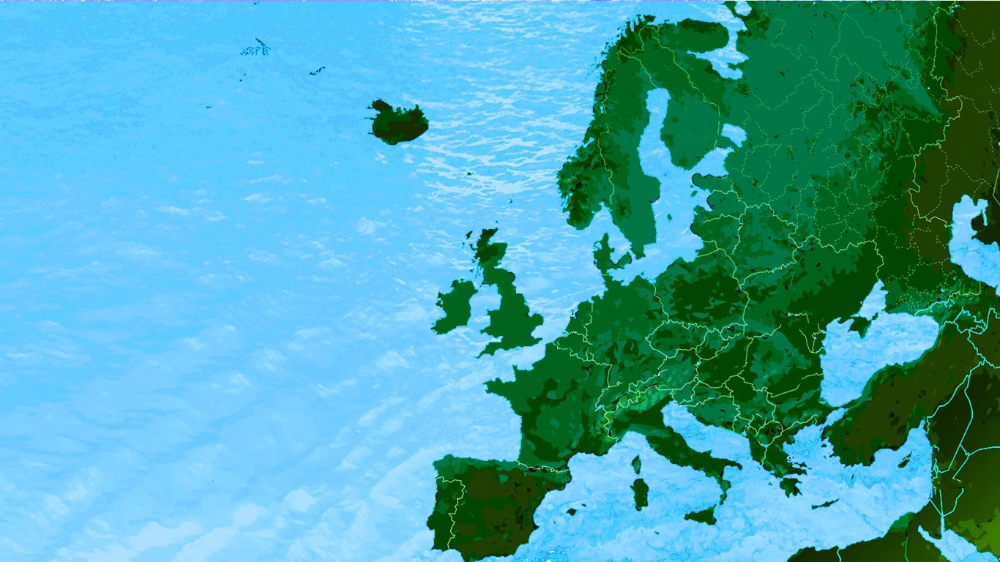
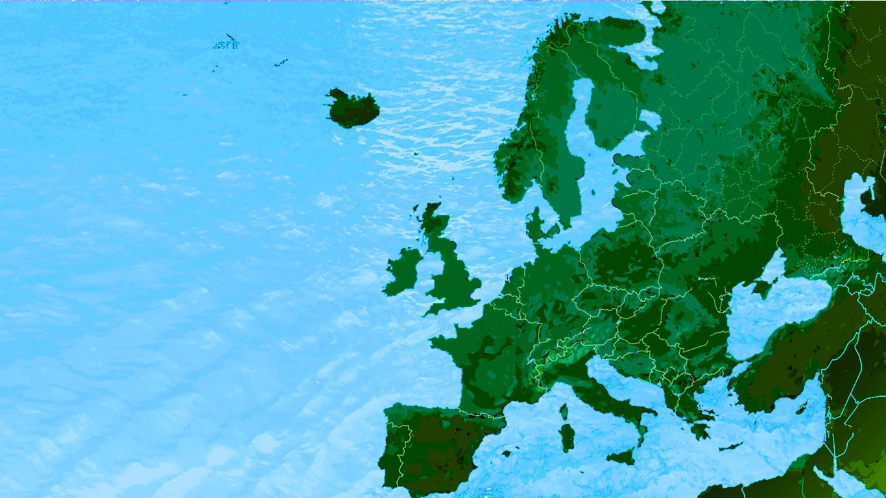

Read more: http://..... Follow us: @TravelHunters on Twitter | TheTravelHunters on Facebook


Hallstatt is a village on Lake Hallstatt's western shore in Austria's mountainous Salzkammergut region. Its 16th-century Alpine houses and alleyways are home to cafes and shops. A funicular railway connects to Salzwelten, an ancient salt mine with a subterranean Salt Lake, and to Skywalk Hallstatt viewing platform. A trail leads to the Echern Valley glacier garden with glacial potholes and Waldbachstrub Waterfall.
Elevation: 511 m, Weather: 26 °C, Wind SE at 6 mph, 43% Humidity
Population: 779 (2014) OGD Austria
- Maislinger for a traditional Austrian breakfast (hint try their delicious pastries)
- Steegwirt is the ideal place for fish lovers, serving fresh fish every day, that’s a place that never disappoints since 1571
- Bräugasthof for dinner in case you could’t get enough of this spectacular view all day (no judge here, we totally support that)
- Ferry cruises is one of our highly recommended activities, as you will not only admire the spectacular view of the mountains around the lake, but you will also have the opportunity to take some amazing and super-instagrammable pictures while you are wandering around the lake
- Hiking is a must in the idyllic mountains surrounding Hallstatt’s lake, we recommend World Heritage Spiral and 5 Fingers panoramic platform in the Krippenstein mountain for all levels of mountaineers (make sure to wear comfortable shoes)
- Hand.Werk.Haus displaying high-quality local handcrafts as to name only some, lederhose makers, hat maker, outhouse carpenter and of course their history
- Beinhaus is the place to go if you are an art lover, the unique displays of skulls and bones painted in magnificent bright colours, will captivate your eclectic taste


Cassis is a Mediterranean fishing port in southern France. Overlooked by a centuries-old château, it’s known for pebbly beaches and its calanques, narrow inlets framed by steep, limestone cliffs. The harbor features pastel-colored buildings, sidewalk cafes and restaurants. Local vineyards are known for producing Cassis white wine. Trails run along the huge, rocky Cap Canaille headland for panoramic sea views.
Area: 26.86 km²
Weather: 25 °C, Wind SE at 21 mph (34 km/h), 43% Humidity
Population: 7,221 (2015) INSEE
- Les Roches Blanches, offers high-standard Mediterranean/Provençale dishes while it pairs them with the most spectacular view of the sea indeed!
- Monsieur Brun, a bit more affordable option but not a less tasteful one. You can find here a range of different options from seafood to even fast food dishes
- Casalini, for a quick stop in-between your strolling around the pier, serving ice-cream, pancakes and other pleasures that are far from guilty, satisfying even the most demanding tongues
- Place Montmorin, if you like the idea of riding and wine, then you should definitely try their electric scouter tours, with a glass of wine in hand when you finish your tour while admiring the moon rise, what else you could possibly ask for?
- Narval Plongée for an adrenaline rush we recommend sky-diving, the team behind this project is highly experienced and the place offers courses for children and the novice first-timers; note that all the necessary equipment will be given to you beforehand so there is no need to worry, just enjoy the ‘ride’
- Musee Municipal Mediterraneen d’Arts et Tradition Populaires, is a unique little museum with a big history dating back to 1910. It gathers collections of beautiful jewelries, ancient costumes and statues of unique beauty and occasionally hosts exhibitions of the local painters
- Musee de la Legion Etrangere, this recently renewed historical museum is definitely a bucket-list-worthy place to visit


Gilleleje is one of the main towns of the Gribskov municipality in Region Hovedstaden in Denmark. The town is at the northernmost point of Sjælland in Denmark.
Weather: 16 °C, Wind N at 3 mph (5 km/h), 75% Humidity
Municipality: Gribskov Municipality
Population: 6,494 (2015)
- Brasseriet, is a contemporary-designed yet affordable place to eat especially during the winter time, with a view over the harbour will allow you to enjoy your food without being chilly. In the menu you will find a selection of fine sandwiches and salads if you wish a quick snack, or fish and meat plates for a dinner time
- Restaurant Bolværket, for the Italian friends out there, serves a wide range of pizza and pasta options
- Hansens Ice cream, you should definitely try their traditional secret ice-cream recipe (hint their sorbets are our personal favourites)
- Swimming, cause let’s be honest here, this is the reason that you wanted to visit Gilleleje all along, with the clearest waters and a tropical tan after only few hours in the sun, you can never go wrong
- Strolling around, we highly recommend you take the Gilbjergstien path from the harbor, and you will thank us later
- Gilleleje Museum, as iconic as it can possibly gets this little treasure is a part of the pyramiden, a cultural center which commemorate the heroic achivements of Danish fishermen and their assistance to the Danish Jews to pass safely in Sweden, during the WW2. Pyramiden also houses a magnificent library
- Munkeruphus, a sweet country house close to the Oresund pier, its architectural beauty and the variety of art exhibitions hosted here throughout the year, make this place a must that should not be missed! (hint their coffee serves the most delicious Danish pastries, always fresh, straight out of the oven)


Porto is a coastal city in northwest Portugal known for its stately bridges and port wine production. In the medieval Ribeira (riverside) district, narrow cobbled streets wind past merchants’ houses and cafes. São Francisco Church is known for its lavish baroque interior with ornate gilded carvings. The palatial 19th-century Palácio de Bolsa, formerly a stock market, was built to impress potential European investors.
Area: 41.42 km²
Weather: 16 °C, Wind NW at 10 mph (16 km/h), 63% Humidity
Population: 214,349 (2016) United Nations
- Café Majestic, a classic beauty of Porto and meeting point of famous writers and politicians back in the days. The winter garden and the piano are truly magical, offering a Belle-Époque experience, while you are drinking your coffee after a stroll in the city
- Petisqueira Voltaria, for experiencing the Portuguese gastronomy the right way (though reservations are not allowed, this place worth the waiting)
- Hungry biker, is an affordable European restaurant with nice ambience and tasteful breakfast menu (hint you will find available here many vegetarian and vegan options)
- River Cruise, make sure you are getting one of the guided boat tours, sailing on the coast of Porto and the river Douro, you can upgrade your experience with wine-tasting; nothing better while enjoying the picturesque scenery that Porto has to offer
- Oporto Adventure Tours, for those that wish to explore the lagoons, hiking or kayaking in the waterfalls of Douro Valley
- Museu Nacional Soares dos Reis, an art post-modern museum that hosts paintings and sculptures of famous Portuguese artists, housed in an neoclassical palace
- FC Porto Museum at the Dragão Stadium, highly endorsed for the football fans out there and not only, the 5* rated stadium by UEFA will immerse you to experience the world, as never before, by implementing the latest available technology. A truly amazing experience indeed!


Positano is a cliffside village on southern Italy's Amalfi Coast. It's a well-known holiday destination with a pebble beachfront and steep, narrow streets lined with boutiques and cafes. Its Chiesa di Santa Maria Assunta features a majolica-tiled dome and a 13th-century Byzantine icon of the Virgin Mary. The Sentiero degli Dei hiking trail links Positano to other coastal towns.
Area: 8.65 km²
Weather: 26 °C, Wind SW at 5 mph (8 km/h), 41% Humidity
Population: Population: 3,942 (2017) Istat
Province: Province of Salerno
- Casa e Bottega, ideal for those who are looking for a yummy breakfast or a light lunch before the beach without these extra calories
- Rada, for the best view in the city and the most luscious wines
- Zagara, for a sweet little treat, this popular shop carries a long history in pastry making, no surprise here if you ask us
- Cartotrekking, you can choose between walking or hiking tours, the expert hikers will assist you with everything you need
- Spiaggia Grande, this is the largest beach in Amalfi coast of Positano, this 300m beach is humbly breathtaking
- Church of Santa Maria Assunta, for those seeking a peaceful place with lot of history, travelers can find here the Byzantine icon of Virgin Mary
- MAR - Museo Archeologico Romano, this museum features roman archeological discoveries from the 1st century BC in a luxurious old villa, unique of its kind will definitely capture your attention